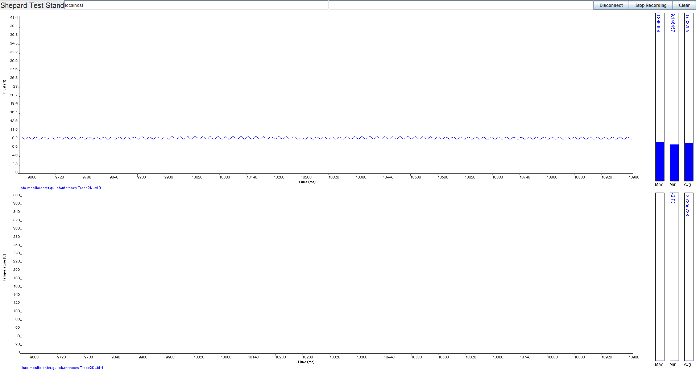

Forums » Discussion »
v1.1 - Java Replacement for Processing Discussion
Added by Jeremy Wright about 9 years ago
Chris has developed a Java based replacement for the Processing app that we currently use to collect data from Shepard. While it's not completed yet (Chris is waiting on the ok to proceed), it shows great potential and is more robust and future-proof (IMO) than the Processing app.
Greg suggested that as part of the discussion about whether or not to move to this Java app, we do 3 things:
- Determine whether or not the Java app meets the design requirements .
- Officially define our target demographic.
- Do a comparison chart of the Processing app vs the Java app to see if one shakes out to have advantages over another.
I've started this thread to cover those three items, and will be posting follow-ups on each in turn.
Replies (10)
RE: v1.1 - Java Replacement for Processing Discussion - Added by Jeremy Wright about 9 years ago
Java Software Requirements Analysis:
- STSR 3.2 - The Java software is useful for measuring both thrust and casing temperature at the nozzle throat.
- STSR 3.2.1 - Sub-requirement generally stated in STSR 3.2.
- STSR 3.2.2 - Sub-requirement generally stated in STSR 3.2.
- STSR 3.2.2.1 - The Java software is capable of recording the peak casing temperature at the throat during a test run.
- STSR 4.4 - As it currently stands, the DAQ system (with the Java software) is capable of 1000+ samples per second. This is much higher than the 400 SPS goal in this requirement.
- STSR 4.5.1 - The Java software is not capable of calibrating the system yet, but this capability is not fully implemented in the Processing software either.
- STSR 4.7 - The Java software does not currently collect data. This will be a quick (1 hour) addition if Chris gets the go-ahead though
- STSR 6.1 - Since the Java app makes use of the Java platform, they will both run on all major operating systems.
RE: v1.1 - Java Replacement for Processing Discussion - Added by Jeremy Wright about 9 years ago
Java Software Demographic Definition:
If I understood Greg correctly, he said we should define our demographic in terms of an individual. If we hit things correctly for this person everything else should fall into place.
Here's my definition of our demographic based on the work we've done over the past year and what we've learned about the educational opportunities for Shepard.
Our demographic is a middle school (6th through 8th grade in the U.S.) teacher who does not have the support of an IT department, and who does not have computer expertise beyond how to connect a USB cable and install software, but has the desire to introduce their students to rocket science in a safe and hands-on way.
If we can hit that demographic, I think that all the other uses cases will be within reach.
I believe that if we can set the Java application up to be launched via a double click on Linux, Windows or MacOS, which should not be a big problem, it will fill the need of this demographic.
RE: v1.1 - Java Replacement for Processing Discussion - Added by Jeremy Wright about 9 years ago
Java Software vs Processing Software Analysis:
I started a Google Docs spreadsheet and shared it with the team members I have email addresses for. Anyone else can request access if they want. For everyone else, you should be able to get public access here
Please feel free to argue for and against the information I have put in the spreadsheet, and also to suggest new comparison categories.
RE: v1.1 - Java Replacement for Processing Discussion - Added by Christopher Sigman about 9 years ago
I've modified the document a bit. I've categorized criteria and added several, and as a result pivoted it to be represented horizontally instead of vertically to make it easier to read everything. I also made it so that the colors were based upon a number in the cell, with a key at the bottom. Next, I added a projection for what progress might be made on the Java and Processing.org versions with 16 and 32 hours of additional work (these are high level estimates; nothing I thought too much about). Lastly, I added weighting for each of the criteria based upon how important I thought each might be, from 1 to 5, and presented a total and weighted average score for each version.
RE: v1.1 - Java Replacement for Processing Discussion - Added by Jeremy Wright about 9 years ago
Thanks Chris, that's great (and thorough) work. You've given us quantitative metrics to use in making the Java vs Processing decision. Good stuff.
Here's a quick link for anyone who wants to view a public version: https://docs.google.com/spreadsheet/pub?key=0Al8J64MIFuTbdHVZZExQVU5YdUFFU3FZR2JtMTNLOFE&output=html
A few questions/thoughts:
- Does "Statistical" just cover the average and peak bar graphs at the end of the chart, or is there more involved?
- What does "Analysis" under "Data" cover?
- What does "Stylizable" mean? Is that just the ability to apply visual theming to the UI elements?
I agree with most of the values you've assigned to the various items except that I would give compatibility with each of the operating systems the same weight. One of our requirements is that the software must be compatible with Windows, Linux, and MacOS. You might also consider adding another category "Misc > Documentation". In my opinion the Processing documentation is pretty poor and I ended up relying on the community. I would give the Processing "Community" a rating of 3 and "Documentation" a rating of 1.
Thoughts?
RE: v1.1 - Java Replacement for Processing Discussion - Added by Christopher Sigman about 9 years ago
I've made a few changes based upon your questions and other comments. Let me know what you think
RE: v1.1 - Java Replacement for Processing Discussion - Added by Jeremy Wright about 9 years ago
That's great Chris. Looks like we've got a lot to talk about during the #EngineerSpeak Hangout tomorrow night.
Thanks for working on that.
RE: v1.1 - Java Replacement for Processing Discussion - Added by J. Simmons about 9 years ago
This is great stuff. I have a couple of quick comments.
- Chris, can you post a couple of screenshots?
- I like the description of the target user. While there are many other types of users, I think this user description captures the challenges many of our users will face and that the software needs to address.
- I would say the Java App should have no problem logging the data to a file if it is already capturing the data and displaying it. So, I'm thinking it should be listed as another color (aka not red).
- I would add one other criteria to measure the software development tools under: ease of packaging. Java apps (and Processing as far as I can tell) are notorious for runtime version conflicts breaking applications. This is related to, but at a higher level, the idea of being able to run the software with a simple double-click. Here is some info I found for Java during a brief google search - http://www.excelsior-usa.com/articles/java-to-exe.html
Definitely going to make for a good discussion tonight!
RE: v1.1 - Java Replacement for Processing Discussion - Added by Christopher Sigman about 9 years ago

Java_DCS_GUI_0.1-full.png (22.4 kB)
{kind=link}
RE: v1.1 - Java Replacement for Processing Discussion - Added by Jeremy Wright about 9 years ago
Here's a very high level view of what happened in tonight's #Engineerspeak Hangout.
Here's a public link to the minutes:
https://docs.google.com/document/d/1BtK1QQ899U7d0ZyxSavbCBbuAtqtLxlPLHrjNY94Afo/pub
In short J brought up some concerns he had with the Java app's current client-server architecture. The main concern was the complexity that the network layer adds. We're short on time to get the kit launched on schedule and don't need to add extra coding and debugging work, and we don't want to make things harder on our target audience (see above) than we have to. There are a lot of subtle and not so subtle issues that can be involved when adding a network layer like this.
There was discussion for and against, but in the end J, myself, and Chris all voted to move forward with the Java app but remove/hide the network layer to reduce complexity. The decision for the Java app was largely based on the comparison chart that Chris and I built here .
(1-10/10)